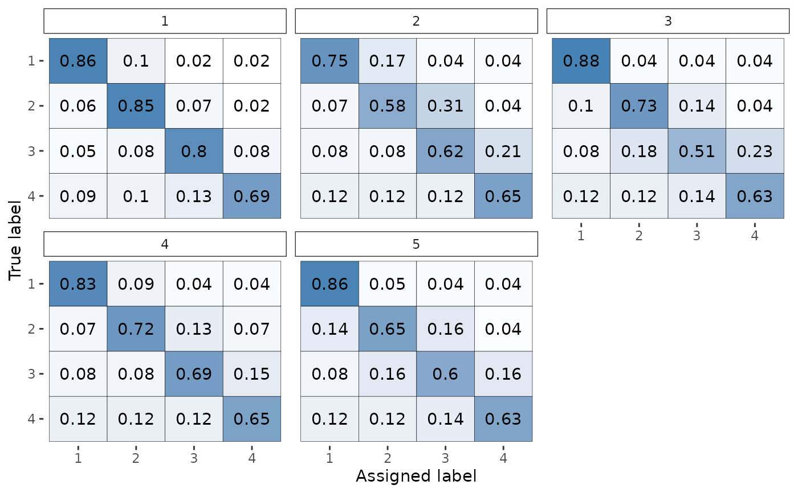

Plot a rater_fit object
# S3 method for rater_fit
plot(x, pars = "theta", prob = 0.9, rater_index = NULL, item_index = NULL, ...)Arguments
- x
An object of class
rater_fit.- pars
A length one character vector specifying the parameter to plot. By default
"theta".- prob
The coverage of the credible intervals shown in the
"pi"plot. If not plotting pi this argument will be ignored. By default0.9.- rater_index
The indexes of the raters shown in the
"thetaplot. If not plotting theta this argument will be ignored. By defaultNULLwhich means that all raters will be plotted.- item_index
The indexes of the items shown in the class probabilities plot. If not plotting the class probabilities this argument will be ignored. By default
NULLwhich means that all items will be plotted. This argument is particularly useful to focus the subset of items with substantial uncertiuanlty in their class assignments.- ...
Other arguments.
Value
A ggplot2 object.
Details
The use of pars to refer to only one parameter is for backwards
compatibility and consistency with the rest of the interface.
Examples
# \donttest{
fit <- rater(anesthesia, "dawid_skene")
#>
#> SAMPLING FOR MODEL 'dawid_skene' NOW (CHAIN 1).
#> Chain 1:
#> Chain 1: Gradient evaluation took 0.000163 seconds
#> Chain 1: 1000 transitions using 10 leapfrog steps per transition would take 1.63 seconds.
#> Chain 1: Adjust your expectations accordingly!
#> Chain 1:
#> Chain 1:
#> Chain 1: Iteration: 1 / 2000 [ 0%] (Warmup)
#> Chain 1: Iteration: 200 / 2000 [ 10%] (Warmup)
#> Chain 1: Iteration: 400 / 2000 [ 20%] (Warmup)
#> Chain 1: Iteration: 600 / 2000 [ 30%] (Warmup)
#> Chain 1: Iteration: 800 / 2000 [ 40%] (Warmup)
#> Chain 1: Iteration: 1000 / 2000 [ 50%] (Warmup)
#> Chain 1: Iteration: 1001 / 2000 [ 50%] (Sampling)
#> Chain 1: Iteration: 1200 / 2000 [ 60%] (Sampling)
#> Chain 1: Iteration: 1400 / 2000 [ 70%] (Sampling)
#> Chain 1: Iteration: 1600 / 2000 [ 80%] (Sampling)
#> Chain 1: Iteration: 1800 / 2000 [ 90%] (Sampling)
#> Chain 1: Iteration: 2000 / 2000 [100%] (Sampling)
#> Chain 1:
#> Chain 1: Elapsed Time: 2.03651 seconds (Warm-up)
#> Chain 1: 2.19906 seconds (Sampling)
#> Chain 1: 4.23557 seconds (Total)
#> Chain 1:
#>
#> SAMPLING FOR MODEL 'dawid_skene' NOW (CHAIN 2).
#> Chain 2:
#> Chain 2: Gradient evaluation took 0.000147 seconds
#> Chain 2: 1000 transitions using 10 leapfrog steps per transition would take 1.47 seconds.
#> Chain 2: Adjust your expectations accordingly!
#> Chain 2:
#> Chain 2:
#> Chain 2: Iteration: 1 / 2000 [ 0%] (Warmup)
#> Chain 2: Iteration: 200 / 2000 [ 10%] (Warmup)
#> Chain 2: Iteration: 400 / 2000 [ 20%] (Warmup)
#> Chain 2: Iteration: 600 / 2000 [ 30%] (Warmup)
#> Chain 2: Iteration: 800 / 2000 [ 40%] (Warmup)
#> Chain 2: Iteration: 1000 / 2000 [ 50%] (Warmup)
#> Chain 2: Iteration: 1001 / 2000 [ 50%] (Sampling)
#> Chain 2: Iteration: 1200 / 2000 [ 60%] (Sampling)
#> Chain 2: Iteration: 1400 / 2000 [ 70%] (Sampling)
#> Chain 2: Iteration: 1600 / 2000 [ 80%] (Sampling)
#> Chain 2: Iteration: 1800 / 2000 [ 90%] (Sampling)
#> Chain 2: Iteration: 2000 / 2000 [100%] (Sampling)
#> Chain 2:
#> Chain 2: Elapsed Time: 2.07919 seconds (Warm-up)
#> Chain 2: 2.05941 seconds (Sampling)
#> Chain 2: 4.13861 seconds (Total)
#> Chain 2:
#>
#> SAMPLING FOR MODEL 'dawid_skene' NOW (CHAIN 3).
#> Chain 3:
#> Chain 3: Gradient evaluation took 0.000128 seconds
#> Chain 3: 1000 transitions using 10 leapfrog steps per transition would take 1.28 seconds.
#> Chain 3: Adjust your expectations accordingly!
#> Chain 3:
#> Chain 3:
#> Chain 3: Iteration: 1 / 2000 [ 0%] (Warmup)
#> Chain 3: Iteration: 200 / 2000 [ 10%] (Warmup)
#> Chain 3: Iteration: 400 / 2000 [ 20%] (Warmup)
#> Chain 3: Iteration: 600 / 2000 [ 30%] (Warmup)
#> Chain 3: Iteration: 800 / 2000 [ 40%] (Warmup)
#> Chain 3: Iteration: 1000 / 2000 [ 50%] (Warmup)
#> Chain 3: Iteration: 1001 / 2000 [ 50%] (Sampling)
#> Chain 3: Iteration: 1200 / 2000 [ 60%] (Sampling)
#> Chain 3: Iteration: 1400 / 2000 [ 70%] (Sampling)
#> Chain 3: Iteration: 1600 / 2000 [ 80%] (Sampling)
#> Chain 3: Iteration: 1800 / 2000 [ 90%] (Sampling)
#> Chain 3: Iteration: 2000 / 2000 [100%] (Sampling)
#> Chain 3:
#> Chain 3: Elapsed Time: 2.07313 seconds (Warm-up)
#> Chain 3: 2.18421 seconds (Sampling)
#> Chain 3: 4.25734 seconds (Total)
#> Chain 3:
#>
#> SAMPLING FOR MODEL 'dawid_skene' NOW (CHAIN 4).
#> Chain 4:
#> Chain 4: Gradient evaluation took 0.000136 seconds
#> Chain 4: 1000 transitions using 10 leapfrog steps per transition would take 1.36 seconds.
#> Chain 4: Adjust your expectations accordingly!
#> Chain 4:
#> Chain 4:
#> Chain 4: Iteration: 1 / 2000 [ 0%] (Warmup)
#> Chain 4: Iteration: 200 / 2000 [ 10%] (Warmup)
#> Chain 4: Iteration: 400 / 2000 [ 20%] (Warmup)
#> Chain 4: Iteration: 600 / 2000 [ 30%] (Warmup)
#> Chain 4: Iteration: 800 / 2000 [ 40%] (Warmup)
#> Chain 4: Iteration: 1000 / 2000 [ 50%] (Warmup)
#> Chain 4: Iteration: 1001 / 2000 [ 50%] (Sampling)
#> Chain 4: Iteration: 1200 / 2000 [ 60%] (Sampling)
#> Chain 4: Iteration: 1400 / 2000 [ 70%] (Sampling)
#> Chain 4: Iteration: 1600 / 2000 [ 80%] (Sampling)
#> Chain 4: Iteration: 1800 / 2000 [ 90%] (Sampling)
#> Chain 4: Iteration: 2000 / 2000 [100%] (Sampling)
#> Chain 4:
#> Chain 4: Elapsed Time: 2.05255 seconds (Warm-up)
#> Chain 4: 2.06819 seconds (Sampling)
#> Chain 4: 4.12073 seconds (Total)
#> Chain 4:
# By default will just plot the theta plot
plot(fit)

# Select which parameter to plot.
plot(fit, pars = "pi")
 # }
# }